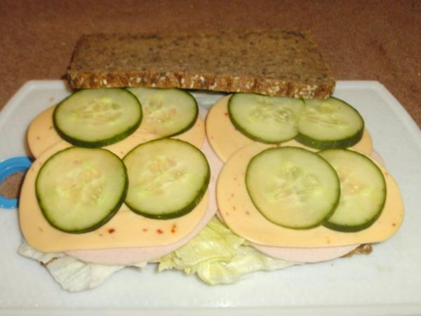

Butterbrot

German Butterbrot
Käsebrot ist ein gutes Brot.
Ingredients
- 1 slice of German rye bread (from bakery)
- 1 slice of cheese (preferably Emmentaler)
- 10 g butter
- some cucumber slices
Steps
- Spread butter on bread
- Add cheese to buttered bread
- Add some cucumber slices on top
- Enjoy!
Back to main page